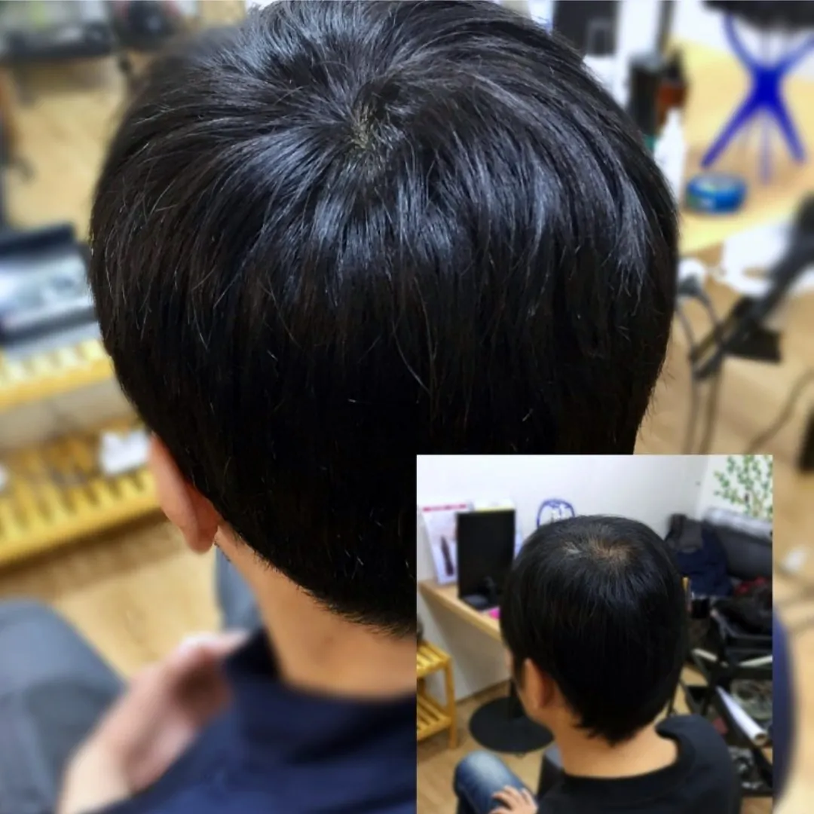
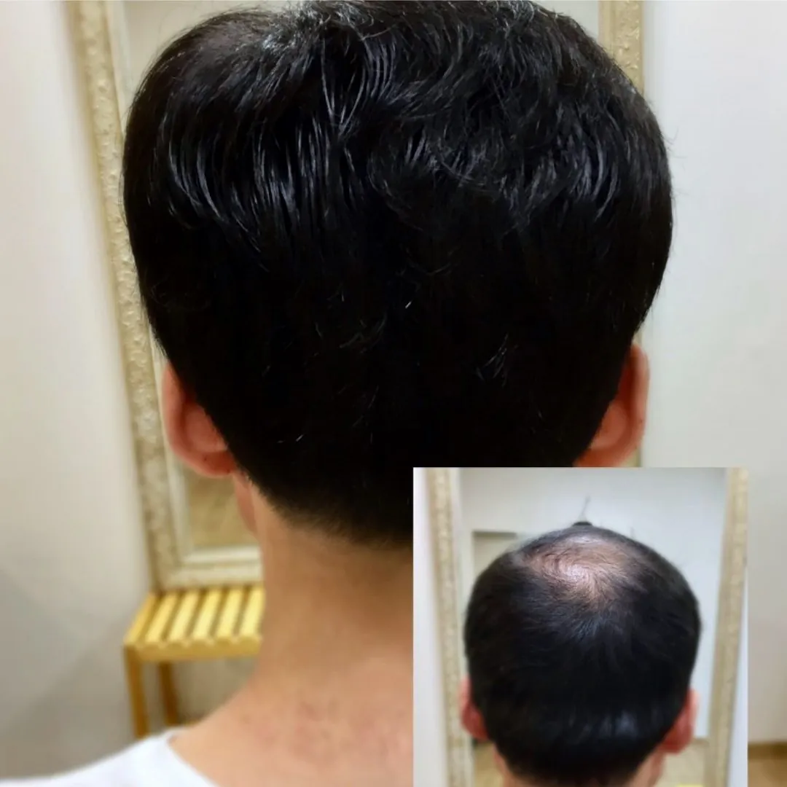
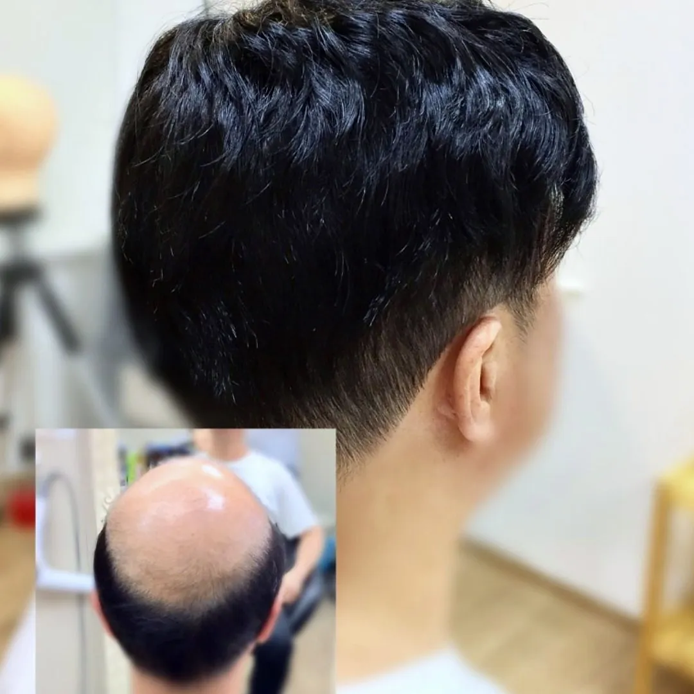
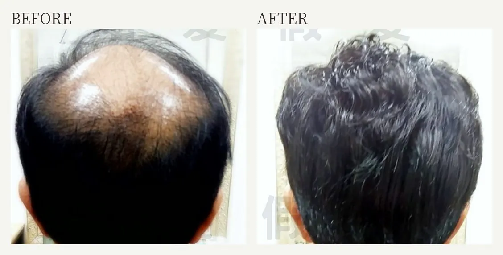
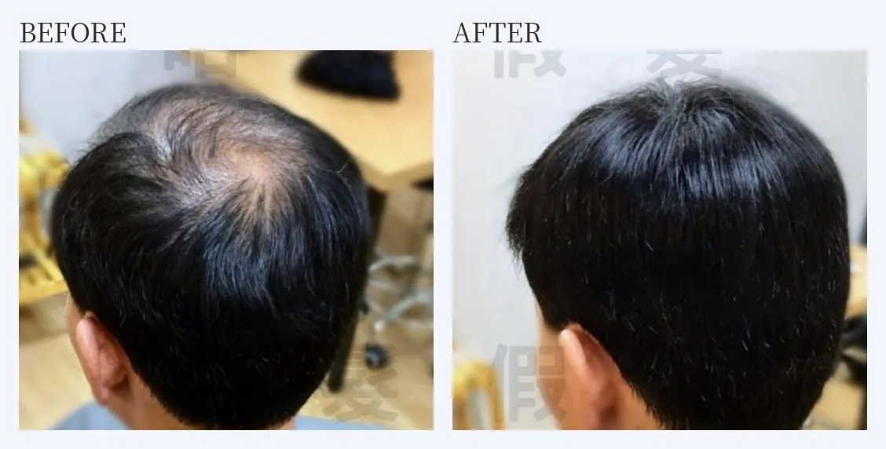
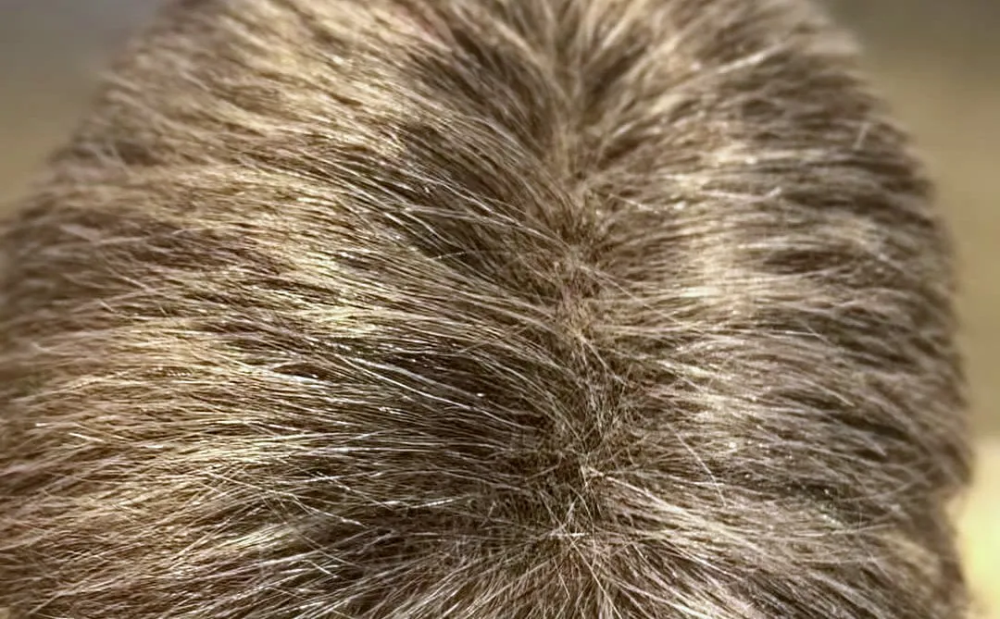

首頁 ／ 男士補髮
男士補髮片與全頂假髮
怎麼選才自然？
落髮集中在頭頂或前額、周圍還有足夠真髮時，多半選補髮片；大範圍稀疏、或想整體換髮型時，再考慮全頂假髮。
自 2004 年在鄭州路現址・Google 評論 4.9★

補髮片和全頂假髮差在哪？
補髮片只覆蓋落髮的區域，和你自己的頭髮接在一起；全頂假髮則覆蓋整個頭部，可以完全換一個髮型。
補髮片比較輕、保留自己的頭髮與髮型感；全頂假髮遮蓋範圍完整，適合大面積稀疏或想整體改變造型的人。
本頁談的是遮蓋與配戴的選擇；落髮原因請先諮詢醫師。
男生戴假髮會不會看起來很假？
會不會假主要取決於三件事：髮際線處理、髮色與髮量是否接近你原本的頭髮，以及戴上後有沒有依你的髮流修剪。
髮量太多、顏色太黑太亮，是最容易「一看就知道」的原因。試戴時會在店裡現場比對你的髮色與髮量（想要的話也可以到自然光下再看一次），並依你的髮流修剪。
補髮片怎麼固定？
膠黏的補髮片有兩種：前面膠黏、後面夾扣，或是全膠黏；全膠黏需要先剃髮。
依你的活動量、流汗程度和頭皮狀況選擇固定方式；店裡有美國原廠假髮膠帶，可以到店請設計師示範貼法與取下方式。頭皮敏感的人，建議先小範圍測試。
手工製作，需要時間
男士補髮是手工製作，需要時間。可以一對一私密諮詢，建議先預約，避免和其他客人時間重疊。
補髮前後對照
以下為補髮前後的實際對照（僅呈現後腦與頭頂）。





手工製作，修剪成自然髮流。男士補髮
男士補髮常見問題
我適合補髮片還是全頂假髮？
看落髮範圍和周圍真髮夠不夠：局部稀疏選補髮片，大範圍稀疏或想完全換髮型選全頂，最後以現場試戴的自然度決定。
M 型禿、髮際線後退怎麼遮比較自然？
通常用前額補髮片補足髮際線，重點是髮際線邊緣要細緻、髮量不要過多，並配合你習慣的髮型方向修剪。
補髮片有哪些材質？
有真髮、纖維絲與日本科技絲，也有依比例混合黑髮與白髮的款式；兩側已經花白時，白髮比例配兩側和後腦的頭髮。
可以一對一私密諮詢嗎？
可以，由設計師賈斯汀一對一諮詢，建議先預約，避免和其他客人時間重疊。
不想植髮怎麼辦？
植髮之外，也可以考慮補髮片或全頂假髮：依落髮範圍選擇，髮色、髮量在店裡現場比對，並依你的髮流修剪。可以先到店裡試戴，看過自然度再決定；男士補髮是手工製作，需要時間。建議先預約，設計師一對一私密諮詢。
補髮片戴久了要怎麼保養？
定期清洗、陰乾，並注意膠帶殘膠要清乾淨；真髮補髮片本店和他店的都可以帶來店裡保養、修理，他店的請先帶來店裡看過，才能判斷怎麼處理；一般纖維髮片屬於消耗品，表面的保護膜會隨清洗慢慢流失，之後容易毛躁、打結，最後糾結成一團，所以不提供清潔、修理。